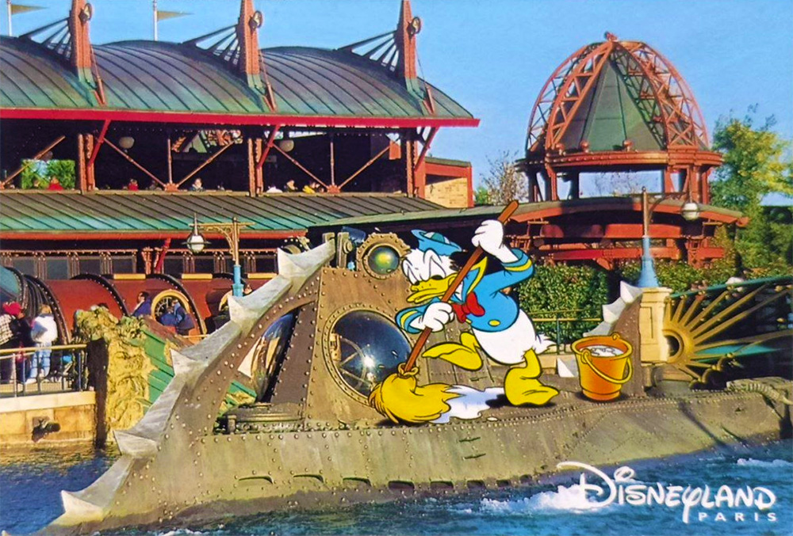

Cartolina dal Disney Planet
Da: S.Ten Alighieri e GM Frruuu
Marne la Vallée - Sol III
Marne la Vallée - Sol III
La fine che ha fatto Da Nee dopo che il Capitano l'ha beccato per l'ennesima volta incastrato con Sàpek.
